两对白鹭掠过清溪。两对白鹭按四个个体；成对单位与个体数量分开。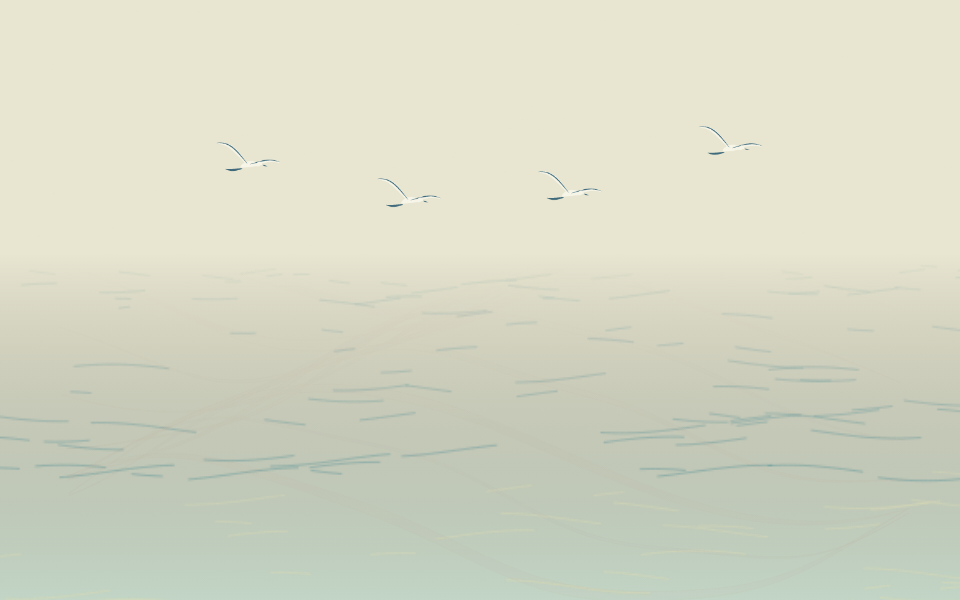风景优先 · 动态试看 ↗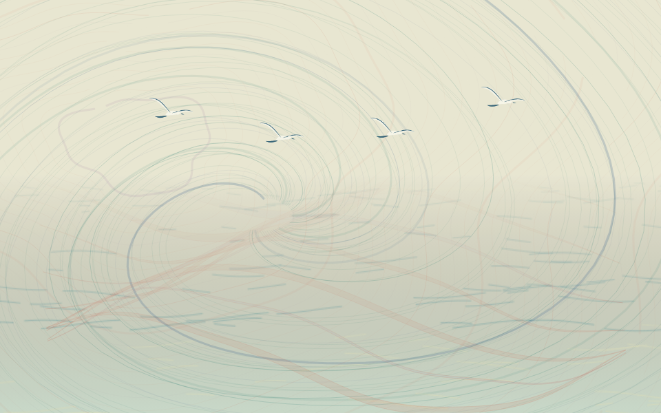景意交融 · 动态试看 ↗本例检查了什么清溪：1 个显示单元；白鹭：4 个显示单元上述显示数量包含本地密度选择，只有原文明示的数词才作明确计数；不确定、缺席及比喻参照不补作实物。本例为手工语义校准。
二十三只归鸟飞过远山。二十三只归鸟保留明确数量，不把连续汉字数词当成两三只。风景优先 · 动态试看 ↗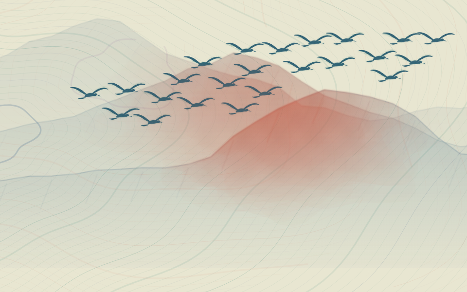景意交融 · 动态试看 ↗本例检查了什么远山：1 个显示单元；归鸟：23 个显示单元上述显示数量包含本地密度选择，只有原文明示的数词才作明确计数；不确定、缺席及比喻参照不补作实物。本例为手工语义校准。
三艘轻舟泊清江，岸边两匹马。三艘舟、两匹马分别核对，量词不串到旁边的景物。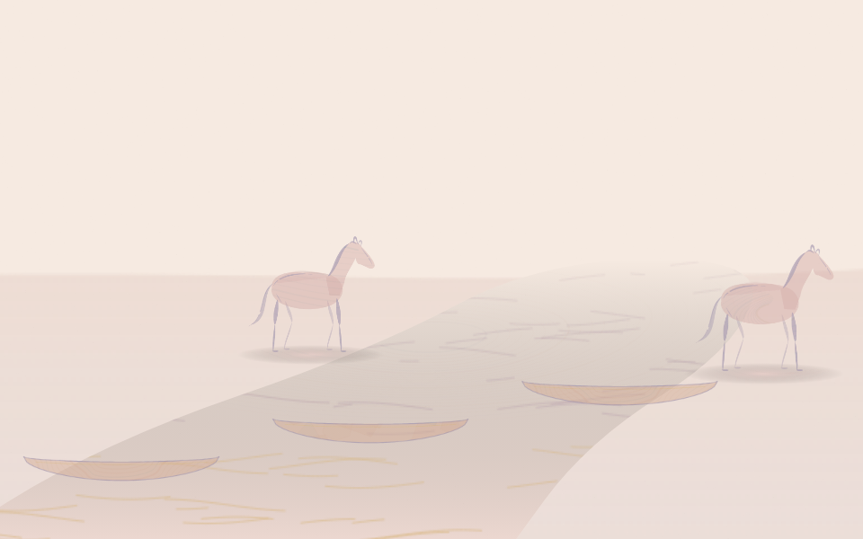风景优先 · 动态试看 ↗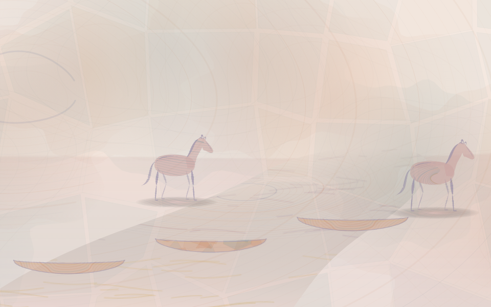景意交融 · 动态试看 ↗本例检查了什么马：2 个显示单元；清江：1 个显示单元；轻舟：3 个显示单元上述显示数量包含本地密度选择，只有原文明示的数词才作明确计数；不确定、缺席及比喻参照不补作实物。本例为手工语义校准。
吾乃旅人，旅人亦为归人。三个称谓指向同一个人；肯定身份可以沿短句连接。风景优先 · 动态试看 ↗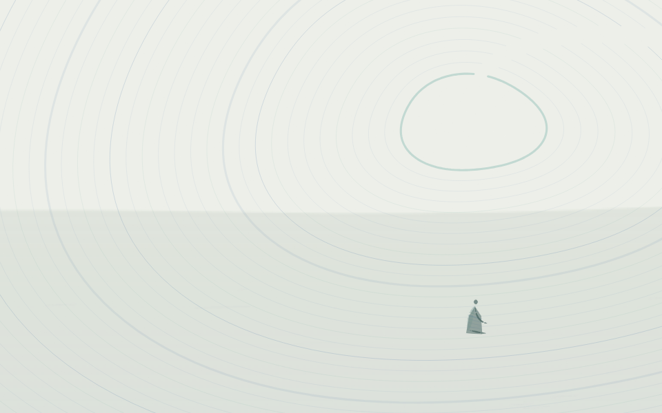景意交融 · 动态试看 ↗本例检查了什么吾／旅人／归人：1 个显示单元（同指共用）上述显示数量包含本地密度选择，只有原文明示的数词才作明确计数；不确定、缺席及比喻参照不补作实物。本例为手工语义校准。
客与旅人并立，未见归人。并列人物不合并；未见的人不补入画面。风景优先 · 动态试看 ↗景意交融 · 动态试看 ↗本例检查了什么客：1 个显示单元；旅人：1 个显示单元上述显示数量包含本地密度选择，只有原文明示的数词才作明确计数；不确定、缺席及比喻参照不补作实物。本例为手工语义校准。
茅舍间两面酒旗招展。两面旗幡各有依托，不重叠到同一间屋上。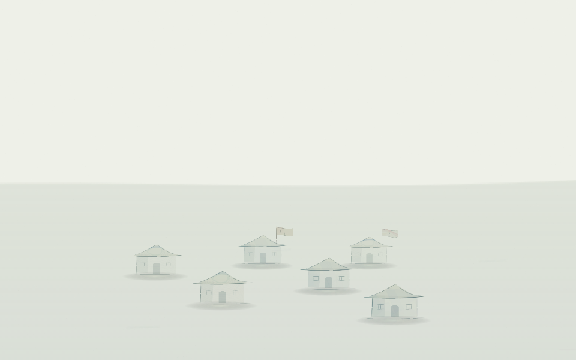风景优先 · 动态试看 ↗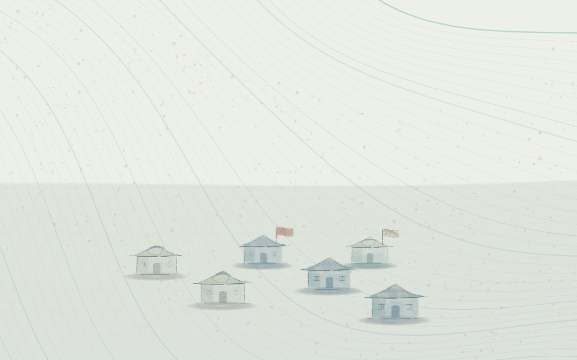景意交融 · 动态试看 ↗本例检查了什么酒旗：2 个显示单元；茅舍：6 个显示单元上述显示数量包含本地密度选择，只有原文明示的数词才作明确计数；不确定、缺席及比喻参照不补作实物。本例为手工语义校准。
客持酒临水，岸边有长剑。持酒这个动作不让另一句中的长剑自动出现在手边。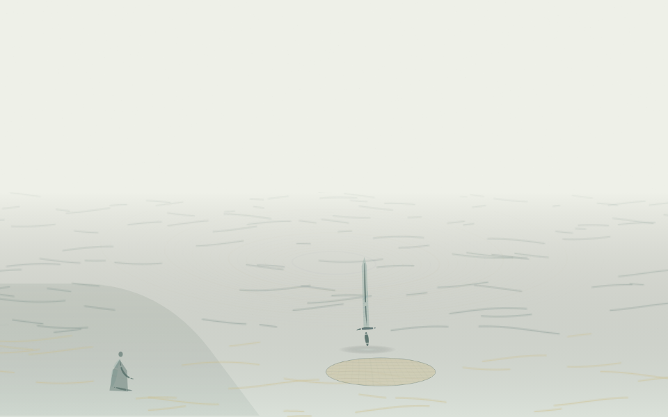风景优先 · 动态试看 ↗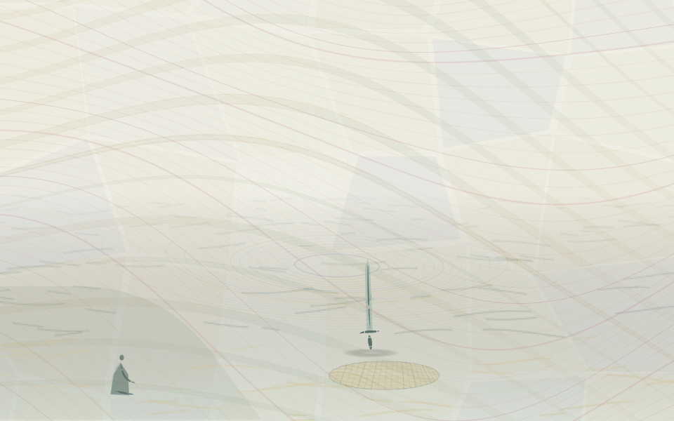景意交融 · 动态试看 ↗本例检查了什么客：1 个显示单元；长剑：1 个显示单元；水：1 个显示单元；酒：1 个显示单元上述显示数量包含本地密度选择，只有原文明示的数词才作明确计数；不确定、缺席及比喻参照不补作实物。本例为手工语义校准。
红梅白菊映清溪。红梅与白菊分别保色，不借同句另一朵花的颜色。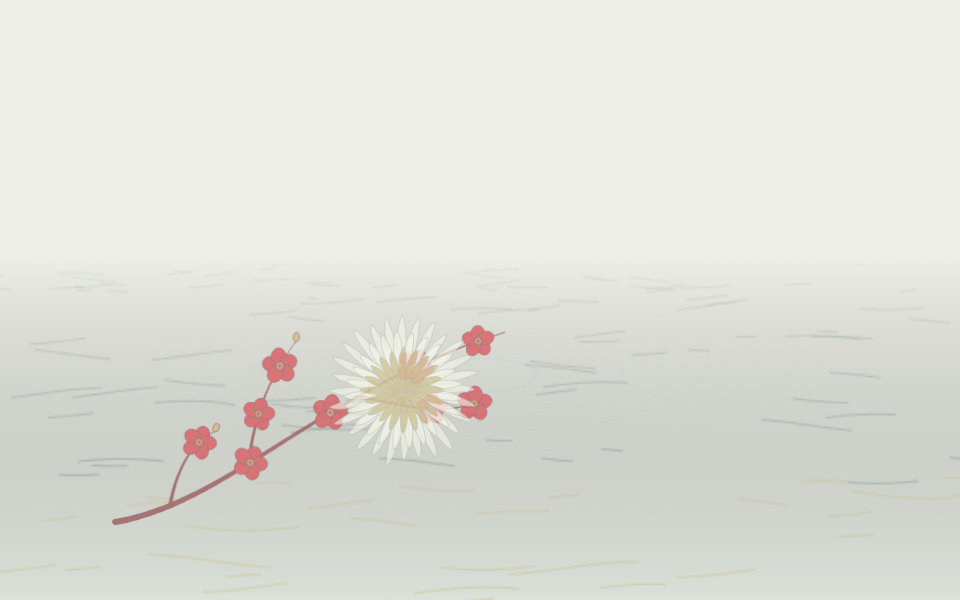风景优先 · 动态试看 ↗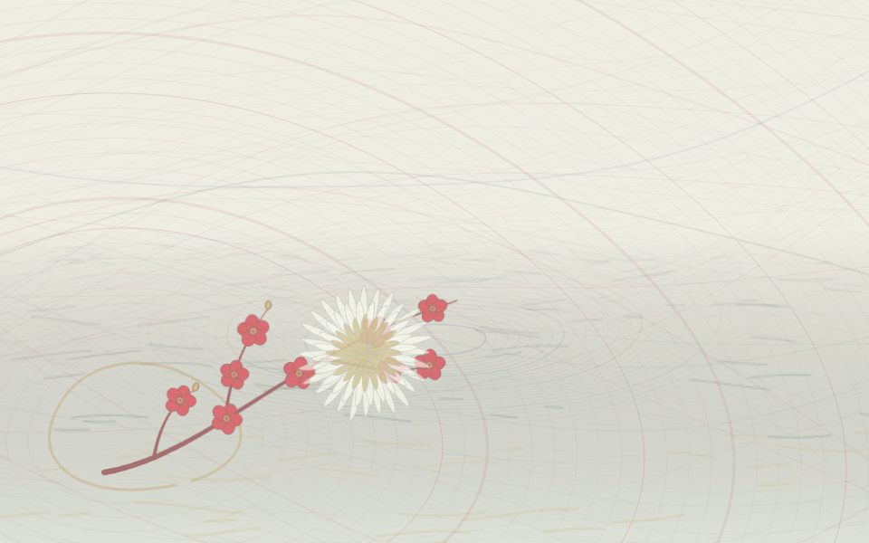景意交融 · 动态试看 ↗本例检查了什么清溪：1 个显示单元；梅：1 个显示单元；菊：1 个显示单元上述显示数量包含本地密度选择，只有原文明示的数词才作明确计数；不确定、缺席及比喻参照不补作实物。本例为手工语义校准。
绿柳夹江，白云绕青山。柳、云、山的颜色跟随各自原词。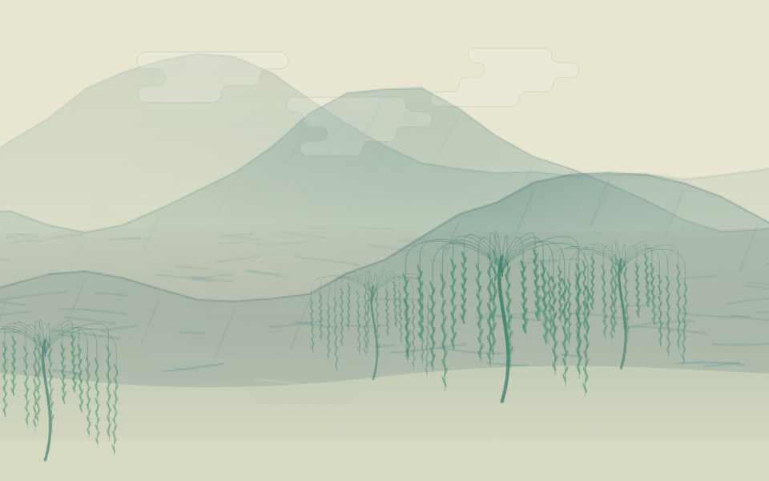风景优先 · 动态试看 ↗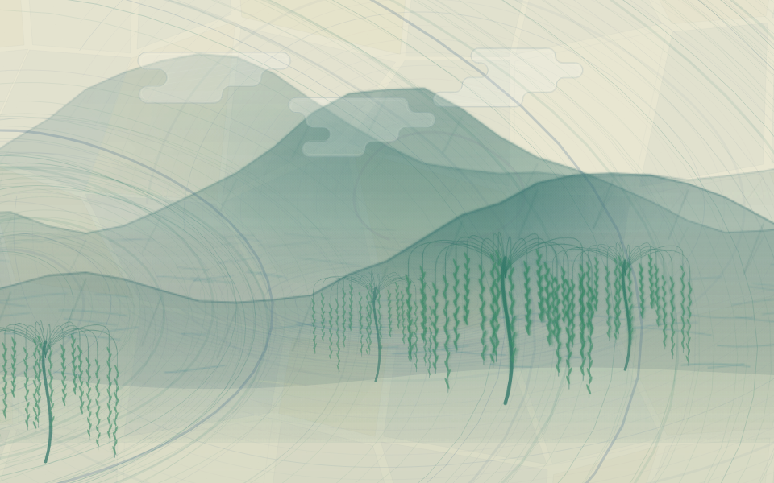景意交融 · 动态试看 ↗本例检查了什么山：1 个显示单元；云：1 个显示单元；柳：4 个显示单元；江：1 个显示单元上述显示数量包含本地密度选择，只有原文明示的数词才作明确计数；不确定、缺席及比喻参照不补作实物。本例为手工语义校准。
不见旌旗，独舟横江。缺席的旌旗不绘制；独舟仍在。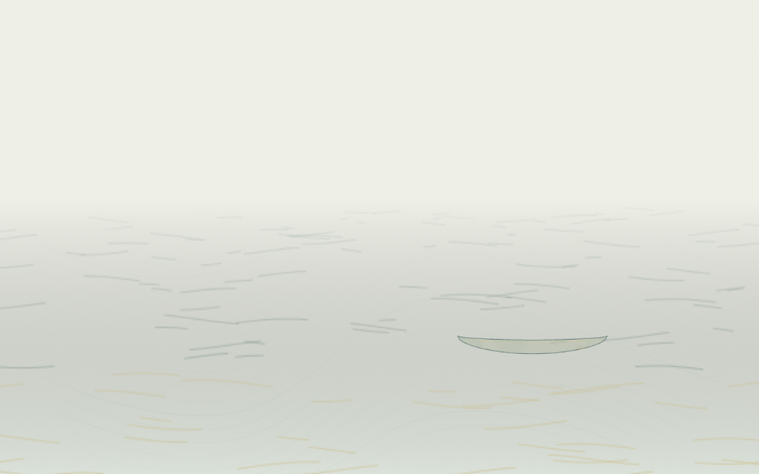风景优先 · 动态试看 ↗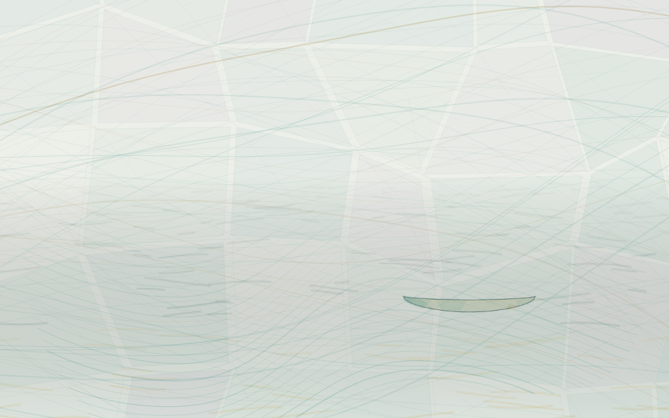景意交融 · 动态试看 ↗本例检查了什么江：1 个显示单元；独舟：1 个显示单元上述显示数量包含本地密度选择，只有原文明示的数词才作明确计数；不确定、缺席及比喻参照不补作实物。本例为手工语义校准。
江水如长剑，夜色沉沉。长剑是江水的比喻参照，不补成真实兵器。风景优先 · 动态试看 ↗景意交融 · 动态试看 ↗本例检查了什么江水：1 个显示单元上述显示数量包含本地密度选择，只有原文明示的数词才作明确计数；不确定、缺席及比喻参照不补作实物。本例为手工语义校准。
三两枝桃花临水开。三两枝保持局部范围，不复制两三棵桃树。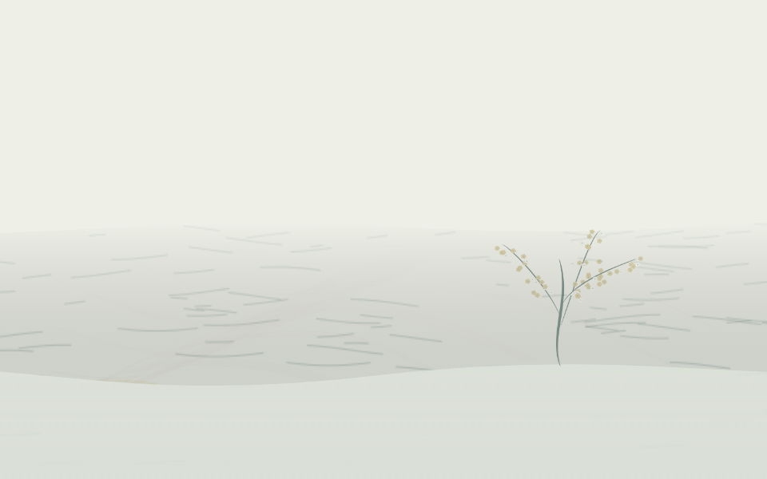风景优先 · 动态试看 ↗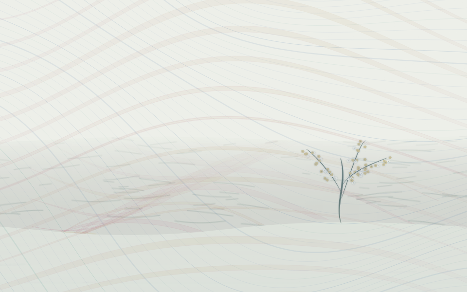景意交融 · 动态试看 ↗本例检查了什么桃花：1 个显示单元；水：1 个显示单元上述显示数量包含本地密度选择，只有原文明示的数词才作明确计数；不确定、缺席及比喻参照不补作实物。本例为手工语义校准。